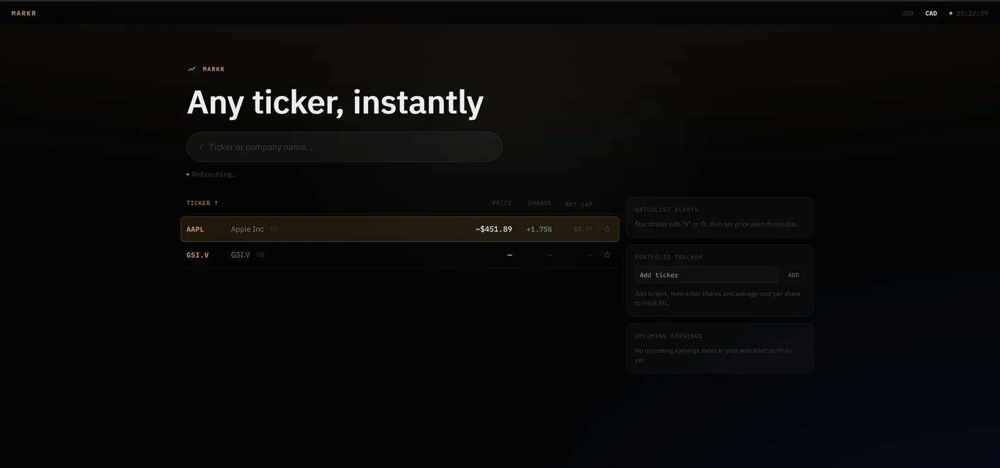

Markr
Stock screener with a six-source data fallback chain.
Six market-data APIs behind one FastAPI backend. A Redis Lua script enforces each source's rate limit atomically, so a burst of traffic falls through the chain rather than failing on a 429. Candles write asynchronously to monthly-partitioned Postgres with per-resolution Redis TTLs; RSI, MACD, and Bollinger Bands are computed client-side. A Vitest suite covers the fallback chain, the indicators, and the limiter.
